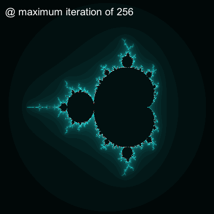

Mandelbrot set: The ordered chaos
The most complicated mathematical object in the universe; yet it is based on simple mathematical iteration.
- Rhyll McMaster
Amazing, ain't it? This is not what you typically see in basic geometry lessons where we spent months talking about points, lines (the shortest path between points), circles, squares and triangles. This branch is actually referred to as Euclidean geometry in honor of Euclid, a Greek mathematician.
But complex shapes are everywhere especially when you look at real life - coastlines, ferns, stock markets. Even more so when you look closer. Weird, yes, but beautiful. Suddenly, Euclidean geometry seems useless to describe these ones. This is where
Watching the video above lets you know how the term 'fractal' was coined. The Mandelbrot set is a class of fractal sets and was first discovered/visualized by Benoit Mandelbrot, a French and American mathematician.
The basic formula of a Mandelbrot set is expressed as f(x) = x2 + c. Aaaand I will stop here then point you to the large fractals repo from Yale University which are more comprehensive.
Happy reading!
How can I end this page without a Mandelbrot visualization. Sorry if this drags your CPU :(. Refresh page to restart animation. (WIP: Button to restart animation.)
Here's the snapshot of the last frame. 